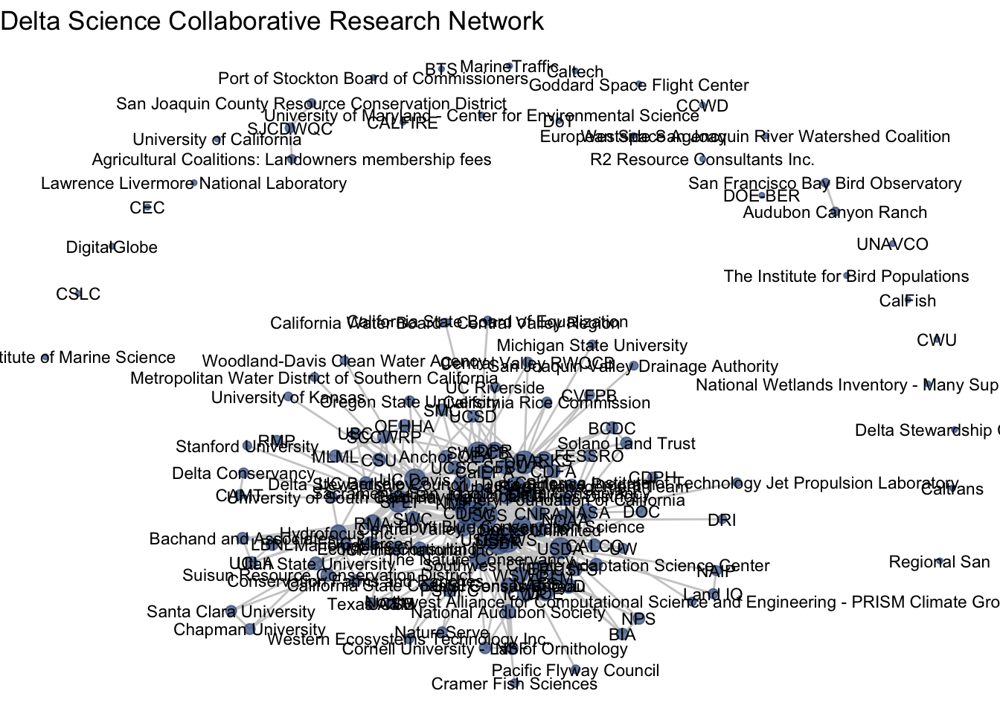
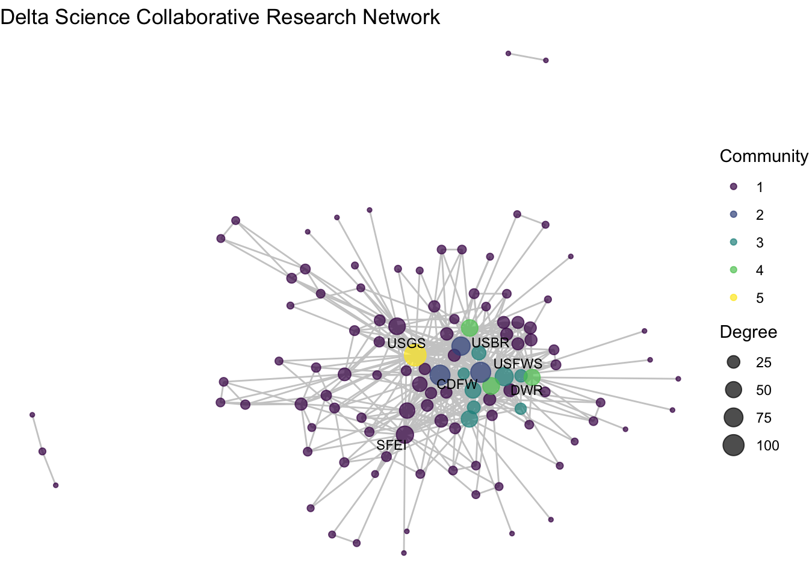
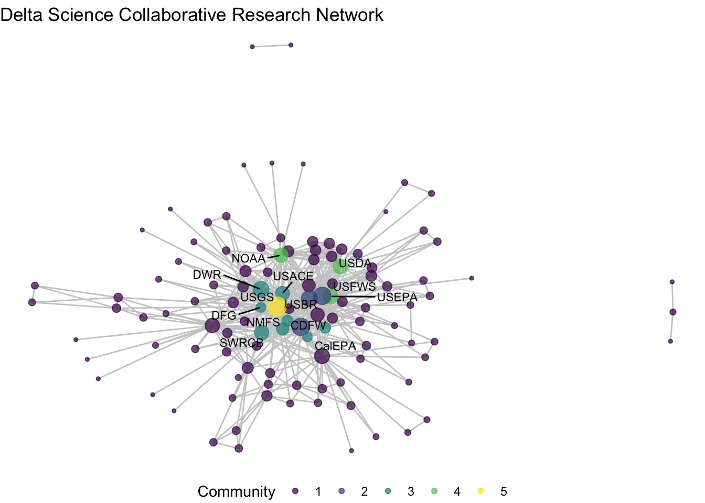
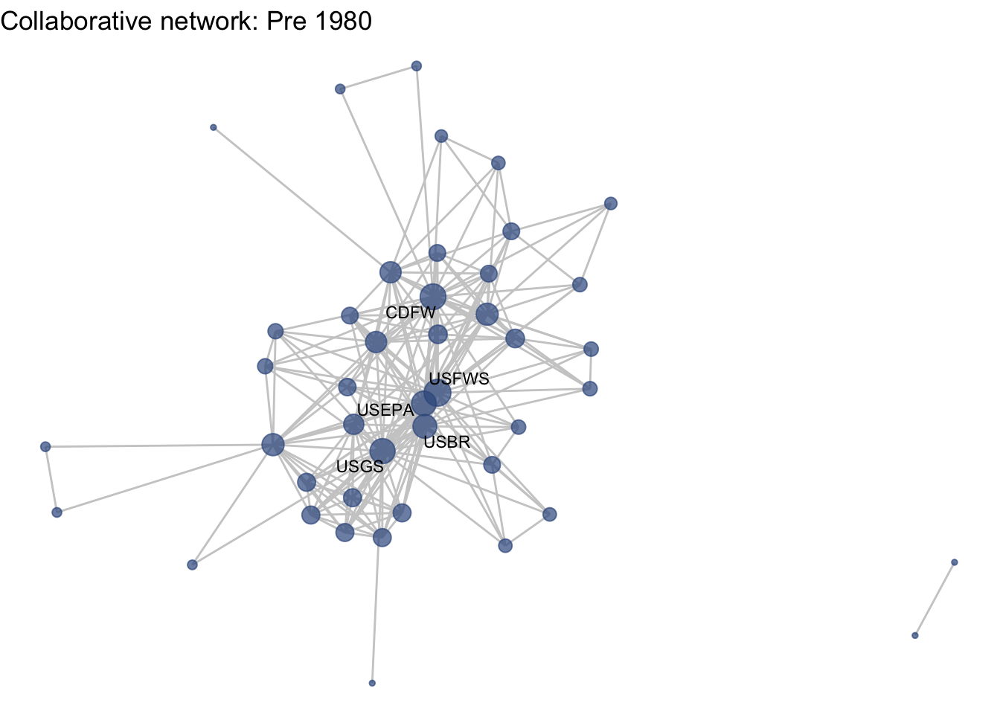

5 One-mode visualization
5.1 Introduction
5.1.1 Preparing to work with network
For the remainder of this tutorial are going to stick to working with the network package, even though the functions we will use for visualization are compatible with both objects. I propose using network objects because they are compatible with more advanced statistical analysis provided through the statnet suite of packages. igraph objects should also work with the ggraph function, but because the syntax for working with the objects is different, the code used to do that would need to change.
To continue working with network objects and ggraph, we want to load in two more packages. The sna package provides us with several functions for calculating network statistics, and dplyr and magrittr are packages from that tidyverse that will help us streamline our plotting.
library(sna)
library(dplyr)
library(magrittr)Because we will be using exclusively network objects, we want to detach igraph before we continue further. This is because there are several commonly-used network functions in both igraph and sna that mask one another. For instance:
sna::degree()
igraph::degree()The igraph degree function will work only on igraph objects and sna degree function will work only on network objects. To avoid confusion and masking in R, we are going to detach the igraph package and work only with network objects and compatible packages like sna.
detach("package:igraph", unload = TRUE)5.1.2 Guiding questions:
To get started with visualization, let’s remind ourselves of our visualization goals and guiding questions. With our one-mode network, we want to know:
- What is the structure of the collaborative research network in the Delta?
- Do we see any particular research communities emerge across these collaborations? (community detection + representing node attributes by color)
- How have the Delta’s research collaborations changed over time? (subgraphs based on edge attribute + multiple plots with fixed coordinates)
5.2 Getting started with ggraph
To introduce the basics of the ggraph package, we’re going to focus on our first question: What is the structure of the collaborative research network in the Delta?
As described in the previous section, ggraph uses the same approach as the ggplot2 grammar of graphics. This means is has three core components: 1.) (network) data, 2.) geometries, in this case edges and nodes, and 3.) aesthetic mappings. As with any ggplot we can add a theme that suits the look of the figure, and ‘void’ themes are often suited for networks.
ggraph(net1) +
geom_node_point() +
geom_edge_link() +
theme_void()## Using "stress" as default layout
These are some defaults at play here:
- The layout argument is set to = ‘auto’, which is the ‘stress’ layout
- The default aesthetic mapping for geom_node_point: x, y, which don’t need specified
- The default aesthetic mapping for geom_edges: x, y, xend, yend, which don’t need specified
5.2.1 Layouts
First, let’s talk about layouts. Networks are typically laid out based on the algorithm you (or the package default) chooses. Layouts are a choice based on how you would like to present the network. Because networks are depicting actors and relationships in an two-dimensional space (x, y), there is no ‘right’ way to plot actors in space (unless, of course, you have actual spatial data associated with your nodes). In which case, you could use a geospatial network mapping (e.g. flight route maps). For scenarios without geospatial coordinates, many network theorists have developed layout algorithms which define rules for calculating the x and y coordinates of the nodes. Many layout algorithms aim to represent networks so that strongly connected nodes are plotted in close proximity to one another, representing a ‘core’ and a ‘periphery’.
There is an overview of ggraph‘s different layouts presented in this blog post, and descriptions of some of them in the ggraph vignette and documentation, under the layout_tbl_graph_... functions. The layout is selected with the ’layout’ argument within the ggraph function. Below we present our network with a few different layouts.


Note that there is a whole world of plotting networks using different conceptualizations of nodes and edges. These conceptualizations of nodes and edges may be dependent on certain layout algorithms. For example, if working with a ‘tree’ based layout, which creates more of a hierarchical structure like a dendrogram, edges as lines may not be suited. Instead, you can specify different edges (e.g. diagonals).
ggraph(net1, layout = 'tree') +
geom_edge_diagonal() +
theme_void() +
labs(title = 'Tree: `layout = "tree"`') +
theme(plot.title = element_text(hjust = 0.5))
For the sake of this workshop we are sticking to more ‘traditional’ network visualization, so we will only be depicting nodes as points and edges as lines.
You can also set a manual layout. Because layouts are just x and y coordinates of points defined by a certain algorithm, you can extract those coordinates using the create_layout() function from ggraph, and fix and/or manipulate those coordinates, if need be. We will deal with this more shortly.
fixed_coord <- create_layout(net1, layout = 'fr')
head(fixed_coord[c(1:2,5)])## x y name
## 1 -2.7682024 -8.867560 Agricultural Coalitions: Landowners membership fees
## 2 0.3442963 1.520134 Anchor QEA
## 3 -7.7717075 6.473676 Audubon Canyon Ranch
## 4 1.0091851 6.683354 Bachand and Associates
## 5 -9.0085372 1.508391 BTS
## 6 -8.7210464 3.182984 CalFishFor our one-mode networks, we are going to use the ‘fr’ layout, which is the Fruchterman and Reingold (force-directed algorithm). This is a choice that helps place higher-degree nodes in the center, and low-degree and isolate nodes on the periphery.
ggraph(net1, layout = 'fr') +
geom_node_point() +
geom_edge_link() +
theme_void()
5.2.2 Aesthetics
Now that we’ve chosen a layout, let’s start adding some aesthetic features. This process will look very much like aesthetic mapping in ggplot2: we can assign aesthetics like color, size, shape, etc. to both our edge and node geometries.
Size by degree: One common approach for network visualization is to size nodes by their degree centrality. While more central nodes are already places at the center of our layout’s algorithm, it can be helpful to also increase their size to communicate this point. To size by degree, we will want to create a degree variable as a node attribute using the degree function, and assign that attribute to our network data.
net1 %v% 'degree' <- degree(net1)Hint: if you get Error in degree(net1) : Not a graph object, double check that you have detached the igraph package!
Color-blind friendly colors: We’d also like our nodes and edges to be colored differently than the default black, so we can set these colors to our geometries. Because the focus of these networks are on nodes, not edges, we can set our edges to a less pronounced color like grey, and select an accessible, color-blind friendly color palette to select a node color from. I personally like to use viridis:
viridis::viridis(12)## [1] "#440154FF" "#482173FF" "#433E85FF" "#38598CFF" "#2D708EFF" "#25858EFF"
## [7] "#1E9B8AFF" "#2BB07FFF" "#51C56AFF" "#85D54AFF" "#C2DF23FF" "#FDE725FF"The latest version of R studio lets us see these colors when we write them out in a script, so let’s do that, and assign these colors to an object named clrs. We will be referencing this vector as we start using the palette.
clrs <- c("#440154FF", "#482173FF", "#433E85FF", "#38598CFF",
"#2D708EFF", "#25858EFF", "#1E9B8AFF", "#2BB07FFF",
"#51C56AFF", "#85D54AFF", "#C2DF23FF", "#FDE725FF")We can now integrate these three features: node size, edge color, and node color, into our plot.
ggraph(net1, layout = 'fr') +
geom_node_point(aes(size = degree),
color = clrs[4]) +
geom_edge_link(color = "gray80") +
theme_void()
Notice how layer order matters (as as with ggplot2), and so by having edges layered on top of nodes, we are really hiding the nodes. Let’s try to switch this, but also include some alpha arguments to help increase transparency.
ggraph(net1, layout = 'fr') +
geom_edge_link(color = "gray80") +
geom_node_point(aes(size = degree),
color = clrs[4], alpha = .7) +
theme_void()
We can also add labels and make thematic alterations to features like the legend, just like with ggplot2.
ggraph(net1, layout = 'fr') +
geom_edge_link(color = "gray80") +
geom_node_point(aes(size = degree), color = clrs[4],
alpha = .7) +
theme_void() +
labs(title = "Delta Science Collaborative Research Network") +
theme(legend.position = "none") Notice that with the ‘fr’ layout (and any other layout algorithm), the coordinates change a bit every time. This is because each time we create a visualization the algorithm is re-run, and there is variation in the exact calculation. You can set your seed (every time before you plot) to keep it consistent)
Notice that with the ‘fr’ layout (and any other layout algorithm), the coordinates change a bit every time. This is because each time we create a visualization the algorithm is re-run, and there is variation in the exact calculation. You can set your seed (every time before you plot) to keep it consistent)
5.2.3 Node labels
So far we are getting a clear shape of the network. But related to our first question about understanding network structure, we may want to understand who is central to collaboration. To better identify our nodes, let’s try to add some node text with geom_node_text(). Already, we have a variable that is the name of our vertices:
head(net1 %v% 'name')## [1] "Agricultural Coalitions: Landowners membership fees"
## [2] "Anchor QEA"
## [3] "Audubon Canyon Ranch"
## [4] "Bachand and Associates"
## [5] "BTS"
## [6] "CalFish"Let’s add this as a text geometry.
ggraph(net1, layout = 'fr') +
geom_edge_link(color = "gray80") +
geom_node_point(aes(size = degree), color = clrs[4],
alpha = .7) +
theme_void() +
theme(legend.position = "none") +
labs(title = "Delta Science Collaborative Research Network") +
geom_node_text(aes(label = name),
size = 3,
color="black")
Okay, a bit overwhelming. Instead, let’s be selective based on degree. Let’s say we want to take the top 5-degree nodes and label them.
# Use extract the network's degree values based on the order of degrees
degs <- (net1 %v% 'degree')[order(net1 %v% 'degree')]
# Then identify the top 5 unique degree values
topdegs <- unique(rev(degs))[1:5]
# Then create a network variable named labels and add the name only if a
# node has the number of degrees in the 'top degrees'
net1 %v% 'labels' <- ifelse((net1 %v% 'degree') %in% topdegs,
net1 %v% 'name', '')Now we have a sparse label attribute.
net1 %v% 'labels'## [1] "" "" "" "" "" "" "" "CDFW" ""
## [10] "" "" "" "" "" "DWR" "" "" ""
## [19] "" "" "" "" "" "" "" "" ""
## [28] "" "" "" "" "" "" "" "" ""
## [37] "" "" "" "" "" "" "" "" ""
## [46] "" "" "" "" "" "" "" "" ""
## [55] "" "" "" "" "" "" "" "" ""
## [64] "" "" "" "" "" "" "" "" ""
## [73] "" "" "" "" "" "" "" "" ""
## [82] "" "SFEI" "" "" "" "" "" "" ""
## [91] "" "" "" "" "" "" "" "" ""
## [100] "" "" "USBR" "" "" "" "" "" ""
## [109] "" "" "USFWS" "" "USGS" "" "" "" ""
## [118] "" "" "" "" "" "" "" "" ""
## [127] "" "" "" "" "" "" "" "" ""
## [136] "" "" "" ""We can use this labels attribute to make our figure more easily readable.
ggraph(net1, layout = 'fr') +
geom_edge_link(color = "gray80") +
geom_node_point(aes(size = degree), color = clrs[4],
alpha = .7) +
theme_void() +
theme(legend.position = "none") +
labs(title = "Delta Science Collaborative Research Network") +
geom_node_text(aes(label = labels),
size = 3)
Almost. Let’s include a repel = T argument to make sure the text doesn’t overlap.
ggraph(net1, layout = 'fr') +
geom_edge_link(color = "gray80") +
geom_node_point(aes(size = degree), color = clrs[4],
alpha = .7) +
theme_void() +
theme(legend.position = "none") +
labs(title = "Delta Science Collaborative Research Network") +
geom_node_text(aes(label = labels),
size = 3,
repel = T)
So, what is the structure of the collaborative research network in the Delta? This network shows us the overall picture, and we can use summary statistics to fill in the gaps. Among the 139 organizations involved in scientific research in the Delta, there is a mean degree of 14, suggesting that organizations are involved with, on average, 14 other organizations (across one or more projects). The network is quite connected, as the main component includes 107 (77%) of the organizations, with 27 isolates, meaning that 27 organizations have not collaborated at all. Within that main component, the average path length is 2.3, meaning that on average an organization is less then 3 connections away from any other organization. At the center of the network are three federal agencies, the US Geological Survey (USGS), US Fish and Wildlife Service (USFWS), and US Bureau of Reclamation (USBR), two state agencies, California Department of Fish and Wildlife (CDFW) and California Department of Water Resources (DWR) one research institute, the San Francisco Estuary Institute (SFEI).
Reveal: How to calculate network-level statistics with the sna package
network.size(net1)## [1] 139mean(net1 %v% 'degree')## [1] 13.66906sum(component.largest(net1))## [1] 107length(isolates(net1))## [1] 27main_comp <- component.largest(net1, result = 'graph')
mean(geodist(main_comp)[['gdist']], na.rm = T)## [1] 2.3450085.2.4 Network plotting function
Now that we’ve got that down as a base, I want to create this network visualization approach as a function so that we can move through other material a little more smoothly. Feel free to just copy this function – all we are doing is taking the code we previously wrote, and replacing the network name that we’ve been using, net1, with the generic argument for the network name, netname.
netplot_function <- function(netname){
p <- ggraph(netname, layout = 'fr') +
geom_edge_link(color = "gray80") +
geom_node_point(aes(size = degree), color = clrs[4],
alpha = .7) +
theme_void() +
theme(legend.position = "none") +
labs(title = "Delta Science Collaborative Research Network") +
geom_node_text(aes(label = labels),
size = 3,
repel = T)
return(p)
}5.2.5 Removing isolates
Before we move too far along in our formatting of this figure, we may want to remove isolates. There are certainly occasions where we want to see isolates in our network, but other times we are interested in the main component. We can identify our isolates and then induce our subgraph with only the non-isolate nodes using the get.inducedSubgraph() function.
isolates(net1)## [1] 5 6 10 14 16 18 26 33 37 42 46 50 56 58 69 76 77 79 97
## [20] 106 108 115 117 127 131 134 137noiso <- (1:network.size(net1))[-isolates(net1)]
net1_noiso <- get.inducedSubgraph(net1, noiso)Now we can see our network without isolates, and quickly use our new netplot_function:
netplot_function(net1_noiso)
5.3 Community detection
Now, let’s combine some network statistics for visualization to take a deeper look at the network structure and address our second guiding question: Do we see any particular research communities emerge across these collaborations?. Often researchers are curious about whether or not there is some pattern within the network. Though the majority of the nodes are connected in one relatively dense component, are some organizations linking with others on a more regular basis? Is there a grouping trend in our network that we can’t see from the network figure on its own? To answer this, we might want to use some community detection approaches.
5.3.1 Algorithms for community detection
Broadly, community detection is an approach that employs a wide range of distance/clustering algorithms to identify to find connected communities within a network based on features like density/modularity. While we’ve moved away from igraph, I do want to point out that it has a number of community detection algorithms. You can read more about community detection algorithms here.
?igraph::cluster_walktrap()
?igraph::cluster_label_prop()
?igraph::cluster_fast_greedy()In the sna package there is the equivalence cluster (equiv.cluster) function, which identifies distances based on structural equivalence. The resource above, Hoffman et al. 2018, define it as follows: ‘Structural equivalence is an important concept from the blockmodeling literature. It is defined where two nodes play the exact same role in a network in terms of their edges, and would be considered interchangeable (Doreian et al., 2005).’
?sna::equiv.clust()5.3.2 Equivalence clusters & block models
Equivalence clustering is a clustering method which groups nodes based on distance from one another. You can specify what kinds of clustering method to use with the cluster.method argument and what distance function to use with equiv.fun, but it by default uses a hierarchical clustering method based on structural equivalence using Hamming distance. We can calculate the distance and plot a dendrogram of the clusters.
ec <- equiv.clust(net1_noiso)
plot(ec)
Now that we have these clusters, we can turn to another method, blockmodelling, which will evaluate the density of node groupings (or ‘blocks’) estimated by the equivalence clusters. We can specify how may blocks we want (k), or specify a height at which to split the classes (h). We will pick a rather arbitrary number for blocks, k = 5.
bm <- blockmodel(net1_noiso, ec, k = 5, glabels = "DSC Collaboration")The block model output includes a vector assigning each node to a block through ‘block membership’. We can wrap this output in the table function to get a sense of how many nodes have been combined across the different blocks. Most of the nodes (97) are in block 1, while the remaning blocks are much smaller, and block 5 has only one node.
table(bm$block.membership)##
## 1 2 3 4 5
## 97 3 8 3 1Additionally, the block model itself provides a matrix with a density measure for the within and between block pairings. Looking along the diagonal, we see that the first block has very low density (0.03), but the smaller blocks have high within-block density (1, .89, 1), while there is no value for block 5 because the density cannot be calculated for a network of 1. [CHECK: IS THIS WHAT’S HAPPENING HERE?]
bm$block.model## Block 1 Block 2 Block 3 Block 4 Block 5
## Block 1 0.03436426 0.2852234 0.06958763 0.1718213 0.4329897
## Block 2 0.28522337 1.0000000 0.91666667 1.0000000 1.0000000
## Block 3 0.06958763 0.9166667 0.89285714 0.5000000 0.7500000
## Block 4 0.17182131 1.0000000 0.50000000 1.0000000 1.0000000
## Block 5 0.43298969 1.0000000 0.75000000 1.0000000 NaNWe can then assign the block membership to the network. It is worth noting, however, that the vector output of bm$block.membership does not maintain the same node order as the nodes in our network. So we want to make sure we reorder the membership vector to align with the vertex names, which are listed under bm$plabels.
5.3.3 Plotting block membership
membership <- data.frame("block" = bm$block.membership,
"vertex.names" = bm$plabels)
membership <- membership[order(membership$vertex.names),]
net1_noiso %v% 'membership' <- membership$blockggraph(net1_noiso, layout = 'fr') +
geom_edge_link(color = "gray80") +
geom_node_point(aes(size = degree, color = factor(membership)),
alpha = .7) +
theme_void() +
labs(title = "Delta Science Collaborative Research Network") +
geom_node_text(aes(label = labels),
size = 3,
repel = T) +
scale_color_viridis_d() +
labs(color = "Community", size = "Degree")
Let’s rethink our labels to get a better sense of who is in what group
# Like before, set a conditional statement so that we only have labels
# for nodes whose membership is in the dense nodes
net1_noiso %v% 'member_label' <- ifelse(net1_noiso %v% 'membership' %in% 2:5,
net1_noiso %v% 'name', "")We might also want to make a table of those so we can check it out
data.frame('block' =
(net1_noiso %v% 'membership')[net1_noiso %v% 'membership' %in% 2:5],
'name' = (net1_noiso %v% 'name')[net1_noiso %v% 'membership' %in% 2:5]) %>%
arrange(block)## block name
## 1 2 CDFW
## 2 2 USBR
## 3 2 USFWS
## 4 3 DWR
## 5 3 CalEPA
## 6 3 SWRCB
## 7 3 Delta Stewardship Council - Delta Science Program
## 8 3 DFG
## 9 3 East Bay Municipal Utilities District
## 10 3 NMFS
## 11 3 USACE
## 12 4 NOAA
## 13 4 USDA
## 14 4 USEPA
## 15 5 USGSiso_net <- ggraph(net1_noiso, layout = 'fr') +
geom_edge_link(color = "gray80") +
geom_node_point(aes(size = degree, color = factor(membership)),
alpha = .7) +
theme_void() +
labs(title = "Delta Science Collaborative Research Network") +
geom_node_text(aes(label = member_label),
size = 3,
repel = T) +
scale_color_viridis_d() +
labs(color = "Community", size = "Degree")
iso_net## Warning: ggrepel: 3 unlabeled data points (too many overlaps). Consider
## increasing max.overlaps
And what if I want to clean this up, say, have only one legend and move the legend below. We can specify which legends we want with guides() and put the legend in the ‘bottom’ position with themes().
iso_net +
labs(color = "Community", size = "Degree") +
guides(color = "legend", size = "none") +
theme(legend.position = "bottom")## Warning: ggrepel: 3 unlabeled data points (too many overlaps). Consider
## increasing max.overlaps
To conclude this section we can revisit the second guiding question: Do we see any particular research communities emerge across these collaborations? We’ve used the blockmodel function, paired with more conditional assignments of network attributes to identify some possible research clusters. Among our five ‘blocks’ we see high density among three of them: blocks 2, 3, and 4. Block 2 includes three of the most central nodes – CDFW, USBR, USFWS – suggesting that these three wild-life and land use agencies at the state and federal levels repeatedly collaborate together in the Delta. Block 3 includes a wider variety of state agencies that are closely clustered. And block 4 has only three federal agencies, USDA, EPA, and NOAA, who much like block 2 seem to be consistently collaborating on science projects. Block 5 includes only USGS, the network’s most central node, pointing to the challenge of clustering highly central nodes given that they span so many connections. The remainder of the organizations are grouped into Block 1, a low-density mass that have no clear trend towards clustering.
5.4 Longitudinal networks
Now that we’ve worked with nodes attributes, lets turn to think more deeply about edges with the third guiding question: How have the Delta’s research collaborations changed over time?. So far we’ve been looking at all of the research collaborations in the DST database, which range from 1950 to more or less present day. But remember that our data have edge attributes based on when the collaborative project occurred, binned into 4 time periods: Before 1980, 1980-1994, 1995-2009, and 2010-2024 (including ongoing projects). See the edge attributes summarized at the bottom of the network object. To visualize how our networks change over time we are going to be ‘inducing subgraphs’, which is a network phrase for taking slices of our network. Networks can be induced based on certain nodes, which we will experiment with when we look at two mode networks. But for this question we will be making subgraphs based on edge attributes.
net1## Network attributes:
## vertices = 139
## directed = FALSE
## hyper = FALSE
## loops = FALSE
## multiple = FALSE
## bipartite = FALSE
## total edges= 475
## missing edges= 0
## non-missing edges= 475
##
## Vertex attribute names:
## degree labels mode name url vertex.names
##
## Edge attribute names:
## before_1980 Y1980_1994 Y1995_2009 Y2010_20245.4.1 Inducing subgraphs by edge attribute
To induce our network based on edge attributes, we’ll want to identify which edges have those attributes. We can identify the edge ids for which each time category is equal to TRUE. We have these are four binary variables, rather than one attribute with four time categories, because organizations can collaborate on projects in more than one time period.
# First, let's give these ids, which will become important later
net1 %v% 'id' <- net1 %v% 'vertex.names'
# Get the edges for each time period
t1 <- which(net1 %e% 'before_1980' == T)
t2 <- which(net1 %e% 'Y1980_1994' == T)
t3 <- which(net1 %e% 'Y1995_2009' == T)
t4 <- which(net1 %e% 'Y2010_2024' == T)Now that we have our edge ids before each time period (t1 through t4), we can use the get.inducedSubgraph function and identify the edge ids that we’d like to keep in each network.
# Induce subgraphs based on edges
net1_t1 <- get.inducedSubgraph(net1, eid = t1)
net1_t2 <- get.inducedSubgraph(net1, eid = t2)
net1_t3 <- get.inducedSubgraph(net1, eid = t3)
net1_t4 <- get.inducedSubgraph(net1, eid = t4)Now we have a slice of the network for each time period. Note that because we did not specify the vertex ids, these networks will include only the nodes that has connections for that time period, and it will not include isolates. For example, though our whole collaborative network has 139 nodes, the network from time period 2 has only 30.
net1_t2## Network attributes:
## vertices = 30
## directed = FALSE
## hyper = FALSE
## loops = FALSE
## multiple = FALSE
## bipartite = FALSE
## total edges= 98
## missing edges= 0
## non-missing edges= 98
##
## Vertex attribute names:
## degree id labels mode name url vertex.names
##
## Edge attribute names:
## before_1980 Y1980_1994 Y1995_2009 Y2010_2024With these induced networks, an important thing to notice is that the attributes assigned in the complete network remain. This is is less important for exogenous, fixed attributes like name, but is important for endogenous/structural attributes like degree. For example, we can check the degree of SFEI in two different networks against the whole network and see that the degree attribute has carried over, but that calcuation is no longer correct in the induced networks.
(net1_t1 %v% 'degree')[(net1_t1 %v% 'name' == "SFEI")]## [1] 60(net1_t2 %v% 'degree')[(net1_t2 %v% 'name' == "SFEI")]## [1] 60(net1 %v% 'degree')[(net1 %v% 'name' == "SFEI")]## [1] 60We need to update/reassign any structural values that we calculated for the whole network so that they are accurate for each sub-network.
net1_t1 %v% 'degree' <- degree(net1_t1)
net1_t2 %v% 'degree' <- degree(net1_t2)
net1_t3 %v% 'degree' <- degree(net1_t3)
net1_t4 %v% 'degree' <- degree(net1_t4)Just as the degree attribute needed changed, we also need to change the the label attribute, which was assigned based on degree. We can write a function to do that to avoid repetition across each time period.
label_top_degree <- function(netname, n){
degs <- (netname %v% 'degree')[order(netname %v% 'degree')]
topdegs <- unique(rev(degs))[1:n]
labels <- ifelse((netname %v% 'degree') %in% topdegs,
netname %v% 'name', '')
return(labels)
}
net1_t1 %v% 'labels' <- label_top_degree(net1_t1, 5)
net1_t2 %v% 'labels' <- label_top_degree(net1_t2, 5)
net1_t3 %v% 'labels' <- label_top_degree(net1_t3, 5)
net1_t4 %v% 'labels' <- label_top_degree(net1_t4, 5)Now that we’ve updated our attributes, let’s plot one of our subgraphs. We can use the netplot_function that we wrote in the Section 5.5.
netplot_function(net1_t1) + labs(title = "Collaborative network: Pre 1980")
netplot_function(net1_t2) + labs(title = "Collaborative network: 1980-1994")
netplot_function(net1_t3) + labs(title = "Collaborative network: 1995-2009")
netplot_function(net1_t4) + labs(title = "Collaborative network: 2010-2024")

 This is a start, but the visualization challenge here is that it is hard to really detect change because the layout changes every time. Remember, our layout algorithm wants to cluster densely connected nodes, and because those clusters shift across time periods (combined with the random element in the algorithmic calculation itself), the algorithm will move nodes to a new coordinate in each time period. To improve this visualization, then, we want nodes to be in the same position for each subgraph. So next we learn how to fix the coordinates of the nodes across multiple graphs.
This is a start, but the visualization challenge here is that it is hard to really detect change because the layout changes every time. Remember, our layout algorithm wants to cluster densely connected nodes, and because those clusters shift across time periods (combined with the random element in the algorithmic calculation itself), the algorithm will move nodes to a new coordinate in each time period. To improve this visualization, then, we want nodes to be in the same position for each subgraph. So next we learn how to fix the coordinates of the nodes across multiple graphs.
5.4.2 Fixing coordinates
With ggraph, we can fix coordinates by creating a layout table from our initial network. Let’s all set the same seed so that we can have the same coordinates across computers. Note that we created an ‘id’ variable earlier based on the vertex name to serve as unique identifiers in these layout tables. We’ll do that again for out no isolates network
set.seed(26)
net1_noiso %v% 'id' <- net1_noiso %v% 'vertex.names'
fixed_coord <- create_layout(net1_noiso, layout = 'fr')
head(fixed_coord[,c(1:8)])## x y degree id labels member_label membership mode
## 1 -4.525570 -9.489269 2 49590 1 1
## 2 -3.393409 -1.165814 10 49592 1 1
## 3 6.230619 -4.040640 2 49593 1 1
## 4 -8.142122 1.745267 8 49594 1 1
## 5 -2.001708 -3.333115 6 49601 1 1
## 6 -2.796420 1.448559 88 49602 CDFW CDFW 2 1With these coordinates fixed from our full plot, we can then apply those same coordinates for each subgraph. To do that, we’ll first create manual layouts for each subgraph. Next we will subset the relevant coordinates from the full coordinate list using the node ‘id’.
# 1. Create a layout table for the subgraph
coord_t1 <- create_layout(net1_t1, layout = 'fr')
# 2. Subset the relevant coordinates from the full layout table
fixed_coord_t1 <- fixed_coord[fixed_coord$id %in% coord_t1$id, c('x','y', 'id')]
# 3. Assign the
coord_t1$x <- fixed_coord_t1$x
coord_t1$y <- fixed_coord_t1$yInstead of copying and pasting this over again, we’ll write a function to quickly assign the coordinates that we set as fixed to a given subgraph. To do that, we take the code we wrote above but generalize the network and fixed coordinate arguments to ‘netname’ and ‘fixed’. Then we can input any network name and any fixed coordinates, and set them all.
assign_fixed_coords <- function(netname, fixed){
coord_t <- create_layout(netname, layout = 'fr')
fixed_coord_t <- fixed[fixed$id %in% coord_t$id, c('x','y')]
coord_t$x <- fixed_coord_t$x
coord_t$y <- fixed_coord_t$y
return(coord_t)
}
coord_t1 <- assign_fixed_coords(net1_t1, fixed_coord)
coord_t2 <- assign_fixed_coords(net1_t2, fixed_coord)
coord_t3 <- assign_fixed_coords(net1_t3, fixed_coord)
coord_t4 <- assign_fixed_coords(net1_t4, fixed_coord)Now we can feed these coordinates directly into the netplot_function and just add new labels. Notice that we can feed these layout data frames directly in to the function, as we would a network object. This is a great functionality of ggraph.
netplot_function(coord_t1) + labs(title = "Collaborative network: Pre 1980")
netplot_function(coord_t2) + labs(title = "Collaborative network: 1980-1994")
netplot_function(coord_t3) + labs(title = "Collaborative network: 1995-2009")
netplot_function(coord_t4) + labs(title = "Collaborative network: 2010-2024")

Huh, we’re really close, but something is not quite right yet. Even though the point have the same coordinates, each version of the network does not take up the same amount of space. For example, the subgraph for the 4th time period includes University of Kansas, which is fixed at x = -8.3, so it is one of the left-most points on the network. However, University of Kansas is not included in the subgraph for the 1st time period, and the left-most node in this network is only positioned at x = -4.7. So our issue is that the x and y axis limits adjust based on the data we input. We can just that as one more layer, specifying the widest range of x and y values in the complete network:
netplot_function(coord_t1) + labs(title = "Collaborative network: Pre 1980") +
xlim(c(-9,7)) + ylim(c(-10,6))
netplot_function(coord_t2) + labs(title = "Collaborative network: 1980-1994") +
xlim(c(-9,7)) + ylim(c(-10,6))
netplot_function(coord_t3) + labs(title = "Collaborative network: 1995-2009") +
xlim(c(-9,7)) + ylim(c(-10,6))
netplot_function(coord_t4) + labs(title = "Collaborative network: 2010-2024") +
xlim(c(-9,7)) + ylim(c(-10,6))

How have the Delta’s research collaborations changed over time?
[DRAFTING]
* Can see who has been most active over different years.
* See a widening of periphery – more actors, less collaborative